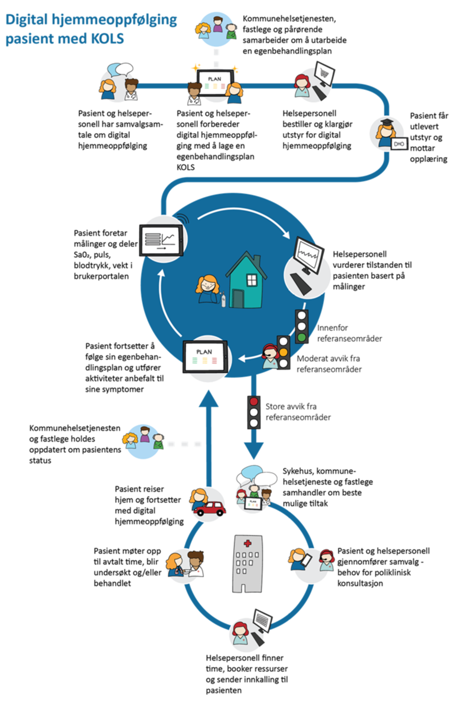
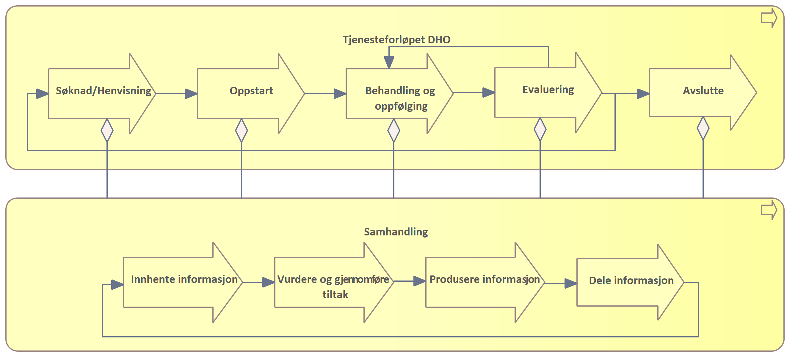
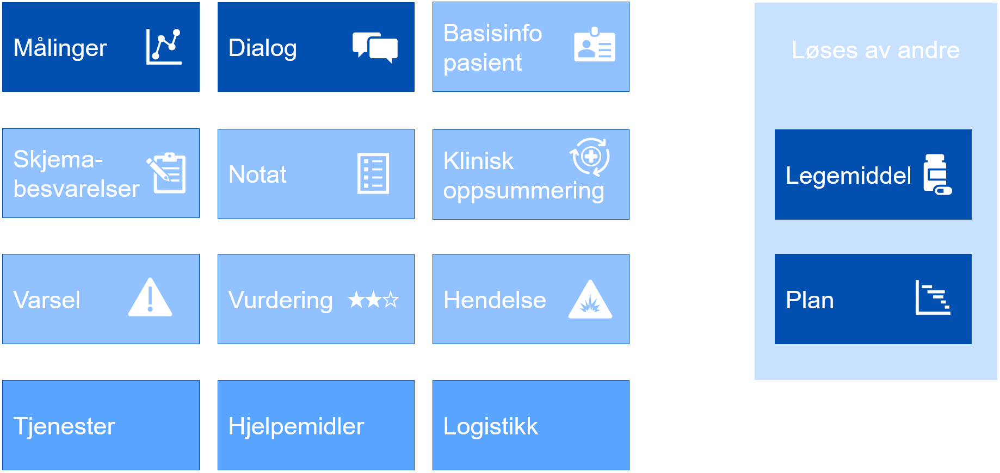
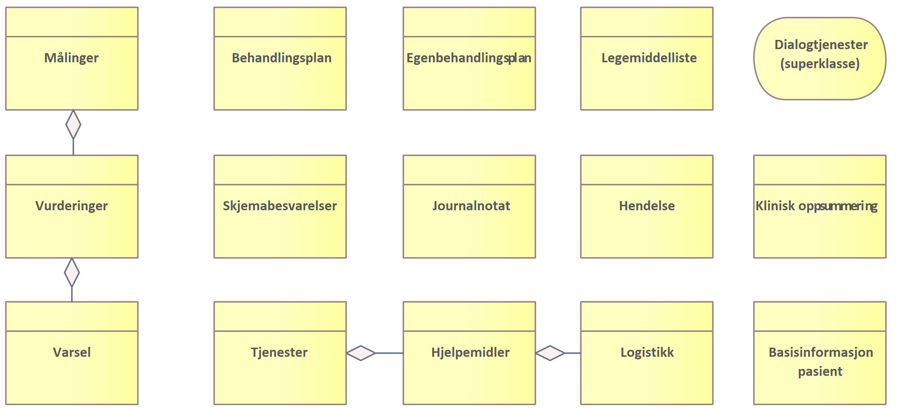

Behovsbilde
| Status | Version | Maturity | Normative level |
|---|---|---|---|
| Prerelease | v0.8 | review | ikke normert |
Dette kapittelet gir en oversikt over de prioriterte behovene knyttet til tjenesteforløp der DHO benyttes. Det er ikke gjort et forsøk på å gi et komplett bilde av de funksjonelle behovene som må ivaretas for helsepersonell og pasient, det er istedet fokusert på behovet for informasjon, med formål å avdekke informasjonsbehov som må understøttes med samhandling mellom helsepersonell i ulike virksomheter. For en bredere og mer detaljert oversikt over brukerbehov, roller som er involvert og beskrivelse av de ulike informasjonstjenestene se vedlegget Detaljert behovsbilde
Bakgrunn for behovsbildet
Behovskartlegging basert på pågående utprøvingsprosjekter
Arbeidet med målarikteturen baserer seg i stor grad på innhenting av erfaringer fra pågående intitativer. Behovskartleggingen har tatt utgangspunkt i i tidligere dokumenterte samhandlingbehov og erfaringer fra utprøvingsprosjekter som benytter velferdsteknologisk knutepunkt (VKP) hvor det er identifisert et stort behov for datadeling mellom virksomheter og omsorgsnivå. Vi har videre studert behov som er viktige for utprøvingsprosjektet mellom Larvik kommune, inkludert fastlegetjenesten, og Sykehuset i Vestfold. I tillegg har prosjektet fulgt behovskartleggingen i Oslo kommune der datadeling skal etableres mellom Lovisenberg sykehus, kommunen og fastleger.
Vi har ikke tatt inn detaljerte beskrivelser fra utprøvings og spredningsprosjektene, siden målarkitekturen skal være et generisk verktøy. For nye prosjekter som er i oppstart kan det være interessant å se til andre intitativer for å blant annet få erfaringer om organisatoriske utfordringer og få ideer til mulige løsninger.
Her er oversikt over de pågående spredningsprosjektene som er del av Nasjonalt Velferdsteknologiprogram. Spredningsprosjektet i Helsedirektoratet har publisert en animasjonsfilm om digital hjemmeoppfølging på Helsedirektoratet sin hjemmeside som hjelp til å informere om hva DHO kan innebære. Film - digital hjemmeoppfølging
Prosessbeskrivelser og tjenesteforløp
En fellesnevner ved behovsarbeidet vi har fått tilgang til er at alle utprøvings og spredningsprosjektene tar utgangspunkt i detaljerte beskrivelser av tjenesteforløp eller prosessbeskrivelser for å beskrive nå-situasjonen og for å avdekke behov knyttet til tjenesteforløpene som analyseres. Beskrivelsene av tjenesteforløpene er til dels svært detaljerte og beskriver ønsket eller eksisterende tjenesteforløp for en eller noen få pasientgrupper hvor DHO benyttes. Figuren under er et eksempel på hvordan Sykehuset i Vestfold illustrerer ønsket tjenesteforløp med utgangspunkt i oppfølging av pasient med KOLS og samarbeid mellom helsepersonell på Sykehuset Vestfold, Larvik kommune og Fastlege.

Eksempel på tjenesteforløp for KOLS pasienter
{kind=link}
Overordnet om samhandlingsbehov
Helse- og omsorgssektoren har behov for mer effektiv samhandling for å øke tilgjengeligheten til relevante helseopplysninger. Digital samhandling handler om å kunne utveksle informasjon digitalt, kommunisere, dokumentere, gjenbruke og dele data på tvers. Målbildet for helhetlig samhandling er å tilby informasjonstjenester på en samhandlingsinfrastruktur som representerer et sett av informasjonsbehov som ikke er tilstrekkelig dekket i dagens nasjonale e-helseløsninger for samhandling. Hver informasjonstjeneste gir mulighet for å utveksle eller dele helseinformasjon mellom ulike aktører. Særskilte behov løses nasjonalt når det gir vesentlig gevinst/ nytte. Høy semantisk samhandlingsevne (hva dataene betyr og hvordan de er definert) er nødvendig for å lykkes med dette. Arbeidet med behov for informasjonsdeling i behandlingsforløp der digital hjemmeoppfølging tilbys sees i sammenheng med målbildet for helhetlig samhandling. Kartlegging av behov for deling av informasjon, fra innbygger til helsepersonells løsninger, er utført med ulike perspektiv.
I dagens helse- og omsorgstjeneste mangler helsepersonell ofte helhetsbilde. Rask tilgang til informasjon når helsepersonell trenger det vil gi stor verdi i arbeidshverdagen. Behovene i helsetjenesten ligger til grunn for etablering av samhandlingsløsningene i sektoren og legger premissene for hvilke samhandlingsløsninger som skal etableres og videreutvikles. Behovene knyttet til tjenesteforløp der helsehjelp ytes til pasienter som mottar digital hjemmeoppfølging (DHO) er i stor grad overlappende med andre tjenesteforløp. Vi kan derfor lære mye om nødvendige samhandlingsløsninger i sektoren ved å se spesielt på sammensatte tjenesteforløp innen DHO. Behovene hentes fra utprøvingsprosjekter og tjenesteeiere i helse- og omsorgssektoren. Erfaring fra utprøvingsprosjektene skal over tid føre til mer spesifikk behovskartlegging knyttet til erfaring med utveksling av informasjon mellom virksomheter og behandlingsnivå (primær- og spesialisthelsetjenesten) knyttet til DHO. Vi skiller i det videre arbeidet mellom informasjonsbehov og funksjonelle krav.
Note
Målarkitekturen tar høyde for å gi et overordnet behovsbilde for hele DHO-området beskrevet over.
Overordnede roller og brukerhistorier
Med fokus på informasjonsbehov
Målbilde for samhandling begrenser seg til å understøtte ytelse av helse- og omsorgshjelp. Dette inkluderer å sikre kontinuitet i direkte helsehjelp, for eksempel når pasienter skrives ut fra sykehus og beveger seg mellom omsorgsnivå og det er behov for oppfølging i kommunen der tjenesten digital hjemmeoppfølging kan benyttes. Samhandling bidrar til økt pasientsikkerhet og kvalitet gjennom å legge til rette for deling av korrekt informasjon for helsepersonell med tjenstlig behov. Det er beskrevet noen overordnede brukerhistorier for funksjonelle behov. En kortfattet beskrivelse av hvem som har behov, hva slags funksjonalitet det er behov for og hvorfor funksjonaliteten gir verdi.
Samhandlingstjenester i behandlingsforløp der digital hjemmeoppfølging benyttes skal tilrettelegge for følgende funksjonelle behov:
- Som helsepersonell har jeg behov for tilgang til oppdatert informasjon som er nødvendig for å yte helsehjelp til pasient på en effektiv måte
- Som helsepersonell har jeg behov for å samarbeide med pasient og annet helsepersonell om dokumentasjon av felles sannhet for informasjon som behandlings- og egenbehandlingsplaner, målinger og legemiddellister, der mange bidrar med en delmengde av informasjonen og kompetanse slik at beslutninger tas med utgangspunkt i oppdater tinfromasjon.
- Som pasient har jeg behov for tilgang til oppdatert og relevant informasjon for å mestre og ivareta egen helse
- Som pasient har jeg behov for at helsepersonell med tjenstlig behov har tilgang til relevant informasjon uavhengig av hvem som har registrert informasjonen, slik at jeg slipper å gjenfortelle historien min

Samhandlingsbehov knyttet til DHO
Tjenesteforløp og samhandling
Som en ramme for behovskartlegging beskrives generelle prosesstrinn som de fleste tjenesteforløp gjennomgår. Et tjenesteforløp beskriver organisering og oppgaver knyttet til å yte helsetjenester til pasienter som følges med digital hjemmeoppfølging. Prosesstrinnene er angitt på overordnet nivå og har som formål å knytte samhandlingsbehovene til et generelt tjenesteforløp/pasientforløp. De overordnede prosesstrinnene kan spesifiseres ved behov for å synliggjøre hvordan samhandlingen understøtter mer spesifikke tjenesteforløp. Ved analyse av samhandlingsbehovene konsentrerer vi oss om hvordan tjenesteforløpet kan understøttes med nye eller endrede samhandlingsløsninger og det meste av arbeidet vil derfor handle om prosessene for samhandling. Vi tar utgangspunkt i en generell prosess for tjenesteforløpet i helsetjenesten (for eksempel knyttet til DHO) i figuren under.

Prosess for tjenesteforløp og samhandling
{kind=link}
I tillegg til behovskartlegging knyttet til utprøvings- og sprednings-prosjekter er den generelle beskrivelsen av tjenesteforløpet basert på Helsedirektoratets anbefalinger knyttet til Utvikling av helhetlige tjenesteforløp.
- Søknad/Henvisning er prosesser knyttet til å motta søknad eller henvisning fra andre deler av helsetjenesten eller innbygger/pårørende. Eksempler kan være at en pasient er tildelt en tjeneste basert på søknad som omfatter hjemmetjenester kombinert med utplassering av DHO-utstyr/ medisinsk utstyr i pasientens hjem
- Oppstart er oppstart av ny helsehjelp basert på søknad/henvisning med bakgrunn i behov og/eller diagnose, pasientens symptomer med utredning av pasientens tilstand. Oppstart inkluderer planlegging av behandling/oppfølging og tiltak som skal gjennomføres, og opplæring av involvert helsepersonell og pasienter/pårørende, for eksempel knyttet til bruk av medisindispenser eller annet DHO utstyr/ medisinsk utstyr og utarbeidelse av plan.
- Behandling og oppfølging av pasient er det mest sentrale prosessteget i tjenesteforløpet og vil omfatte alle former for vurdering, rapportering, oppfølging og behandling som gjennomføres. Det kan være oppfølging ved hjelp av teknologi, hjemmebesøk, konsultasjon eller behandling som krever besøk/innleggelse på helseinstitusjon
- Evaluering innebærer å gjennomgå hvordan oppfølgingen fungerer, vurdere nye tiltak og eventuelt justere eksisterende tiltak.
- Avslutte tjeneste innebærer at tjenesteforløpet avsluttes etter evaluering.
Prosessen for Samhandling er brutt ned til generelle steg som kjennetegner en samhandlingsprosess. Prosessen for samhandling kan som figuren viser understøtte alle deler av et tjenesteforløp der informasjon innhentes, produseres eller deles. Delprosessene for samhandling kan også detaljeres videre og vil vanligvis understøttes på på ulike måter av automatiserte eller manuelle prosesser og funksjoner.
- Innhente informasjon er enhver prossess hvor en aktør leser, finner eller henter informasjon fra andre interne eller eksterne kilder.
- Produsere informasjon er enhver prosess knyttet til å dokumentere tiltakene som er gjennomført og vurderingene som ligger til grunn for tiltakene.
- Dele informasjon er enhver prosess knyttet til å dele eller tilgjengeliggjøre produsert informasjon, slik at andre aktører kan konsumere og nyttiggjøre seg av informasjonen.
Identifiserte informasjonsbehov
Informasjonstjenester som beskrives i DHO arbeidet
Målarkitekturen skal beskrive behov for samhandling og informasjonstjenester som kan sikre at samhandlingen understøtter helsetjenesten på en hensiktsmessig måte. I arbeidet med å kartlegge informasjonsbehov skiller vi mellom informasjonsressurser og informasjonstjenester som må etableres for å understøtte informasjonsbehovet. I den grad det er nødvendig vil arbeidet også beskrive andre initiativer som etablerer informasjonstjenester det er behov for i forbindelse med DHO og hvordan disse tjenestene bør tilgjengeliggjøres for å svare ut behov som er identifisert i forbindelse med DHO.
Samhandling på tvers
Gjennom dette arbeidet er det hovedfokus på hvordan data fra pasient (pasientregistrerte eller fra sensorer og utstyr) kan brukes på tvers av omsorgsnivå i helsetjenesten på en hensiktsmessig måte, og hvordan samhandlingen om denne informasjonen bør innrettes.
Figuren viser en oversikt over identifiserte informasjonsbehov i forbindelse med DHO:
 Identifiserte informasjonsbehov
{kind=link}
Data fra pasient og informasjonstjenester
Hovedmålet for målarkitekturen DHO er å vise hvordan samhandlingen knyttet til data fra pasient skal gjennomføres, samtidig som den må vise hvilke andre informasjonstjenester som må være tilstede for å understøtte tjenesteforløp. Informasjonstjenestene som omfattes er i denne sammenhengen:
- Undersøkelser, målinger og funn (IT17 og IT07)
- Skjemabesvarelser og NEWS scoringer (IT17)
- Vurderinger og varsel basert på målinger (IT17)
Pasientrapporterte data
Pasientene er aktive deltakere og bidragsytere i helsehjelpen de mottar og kan følges opp i hjemmet ved at pasientens egenmålinger, pasientrapporterte opplysninger om egen helsetilstand eller automatiske målinger, sendes digitalt til helsetjenesten.
Informasjonstjenester i andre kategorier
Det er identifisert behov for samhandling om ytterligere informasjon og informasjonstjenester for å understøtte et sammenhengende tjenesteforløp som inkluderer DHO. Dette inkluderer følgende behov:
- Plan (IT08)
- Hendelser (IT03 og IT19)
- Tjenester, inkludert hjelpemidler og logistikk (IT23)
- Legemiddelliste (IT03)
- Journalnotat (IT09)
- Klinisk oppsummering (IT01)
- Basisinformasjon pasient (IT12)
- Dialogtjenester (IT10 og IT11)
Prioritering av informasjonstjenester
Her vises i prioritert rekkefølge de informasjonstjenestene som er mest etterspurt av helsepersonell tilknyttet DHO:
- Egenbehandlingsplan (IT08)
- Legemiddelliste (IT03)
- Målinger, vurderinger og varsel (IT17 og IT07)
- Dialogtjenester (IT10 og IT11)
- Hjelpemidler og utstyrslogistikk (IT23)
I tillegg er det en rekke andre informasjonstjenester som er høyt prioritert av tjenesten, det er noen viktige sammenhenger mellom informasjonstjenestene som vises i figuren:
 Viktige sammenhenger mellom informasjonsbehov og informasjonskategorier
{kind=link}
Det utvikles samhandlingsløsninger knyttet til behov for digitale behandlings- og egenbehandlingsplaner og legemiddelliste gjennom egne initiativ. Disse behovene behandles derfor ikke videre i målarkitekturen, men intitaivene bør ses i sammenheng siden samhandlingsløsningene vil innvirke på den totale brukeropplevelsen for innbygger og helsepersonell.
Prioritering av målinger, vurderinger og varsel
Basert på behovsarbeidet er det besluttet at første steg i å videreutvikle samhandlingstjenestene knyttet til DHO prioriterer utveksling av Målinger, vurderinger og Varsel. Dette er informasjonstjenester som etterspørres fra mange virksomheter og alle omsorgsnivå i flere geografiske regioner.
Detaljert behovsbeskrivelse
For en bredere og mer detaljert oversikt over sluttbruker behov, roller som er involvert og beskrivelse av de ulike informasjonstjenestene se vedlegget detaljert behovsbilde
Created: March 10, 2023 11:51:51